Repertorio
El objetivo de este capítulo es recoger un mínimo repertorio básico que sirva para dar una pequeña visión de conjunto de la música árabe, en especial desde el punto de vista del intérprete de ud. Incluye tanto piezas instrumentales como vocales, ya que la mayor parte de estas últimas, si han alcanzado una cierta popularidad, se interpretan igualmente con el ud de manera habitual. Todas ellas son reconocibles para cualquier oyente con una base de cultura musical dentro del contexto árabe.
Se incluyen piezas que corresponden a diferentes estilos y formas musicales, a distintos autores y procedencias, y que utilizan diversos maqamaat.
El orden en el que aparecen en las siguientes páginas puede considerarse un orden aproximado de complejidad y dificultad de interpretación.
Bint Al Shalabiya
Anónimo — Nahawand Do
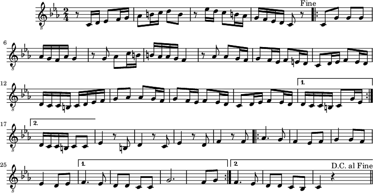
El Helwa Di
Sayed Darwish — Hiyaz Re
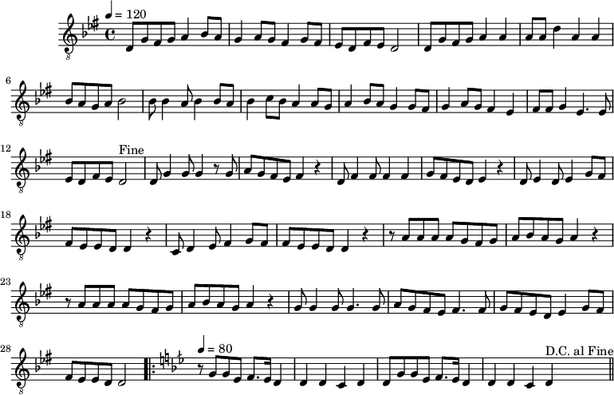
Zuruni Kuli Sana
Sayed Darwish — Ayam Do
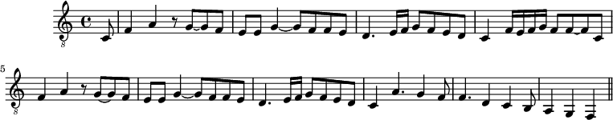
Nassam Alayna Al Hawa
Assi & Mansour Rahbanni — Kurd La
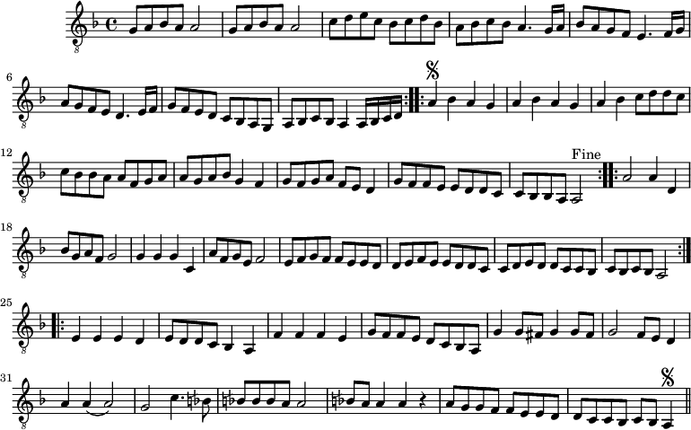
Ya Tira Tiri
Abu Jalil Al-Qabbani — Rast Do
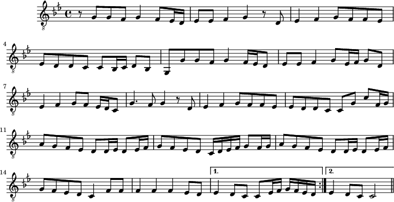
Saaluni Alnaas
Ziad Rahbani — Bayati Re
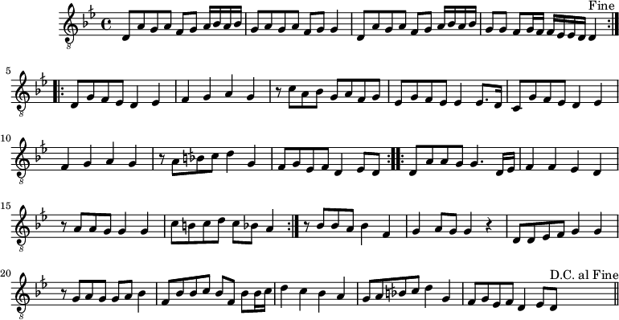
Telet Ya Mahla Nourha
Sayed Darwish — Ayam Do
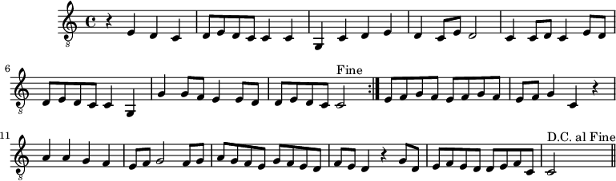
Yamma Mwel Al Hawa
Tradicional palestina — Ayam Do
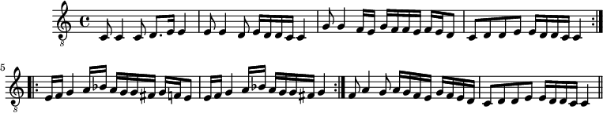
Foq Al Nahal
Tradicional iraquí — Hiyaz Re
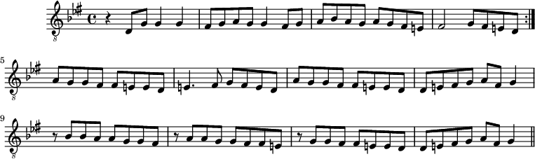
Ya Shadi Al Han
Sayed Darwish — Rast Do
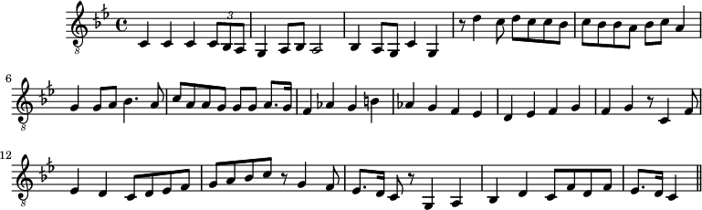
Kuando el rey Nimrod
Tradicional sefardí — Hiyaz Re
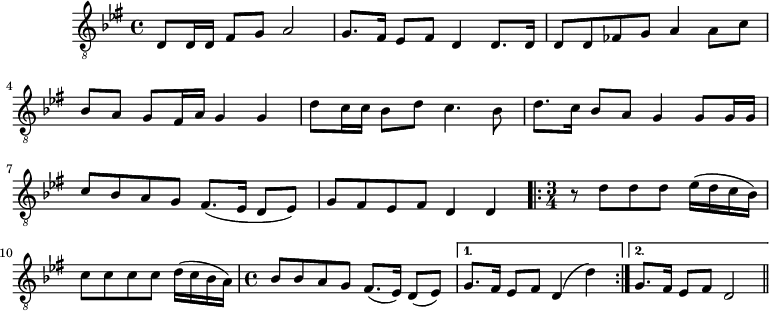
Üsküdar'a gideriken
Tradicional turca — Nahawand Re
Aparece también en el repertorio árabe como Ya Banat Iskandaria
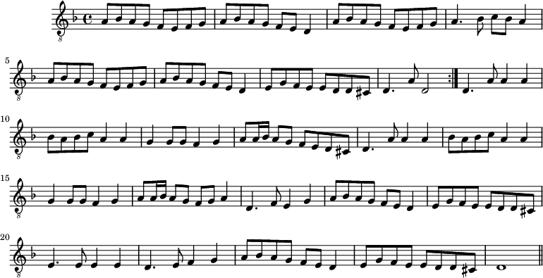
Raqsat Al Yamal
Farid Al Atrash — Hiyazkar Re
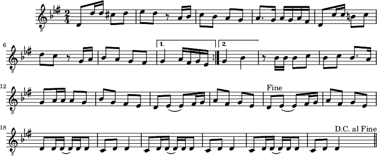
Noura Noura
Farid Al Atrash — Bayati Re
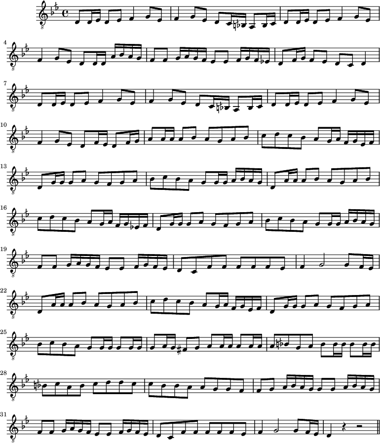
Lamma badda Yatazanna
Anónimo — Nahawand Sol
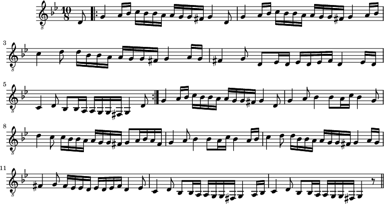
Raqsat Al Hawanem
Tradicional — Huzam Miɦ
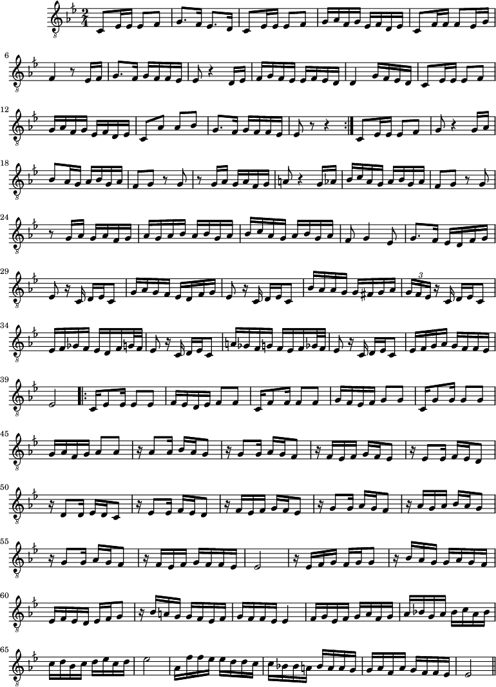
Zeina
Mohammed Abdel Wahab — Hiyaz Re
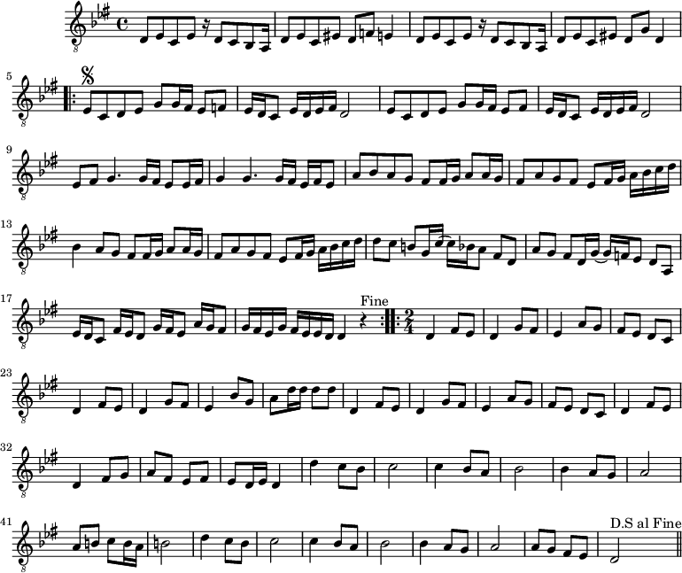
Aziza
Mohammad Abdel Wahab — Nahawand Sol
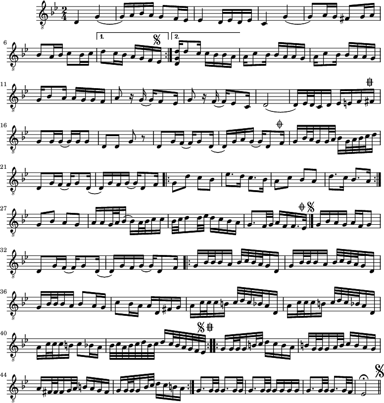
Tahmila Suznak
Sami Shawwa — Suznak Do
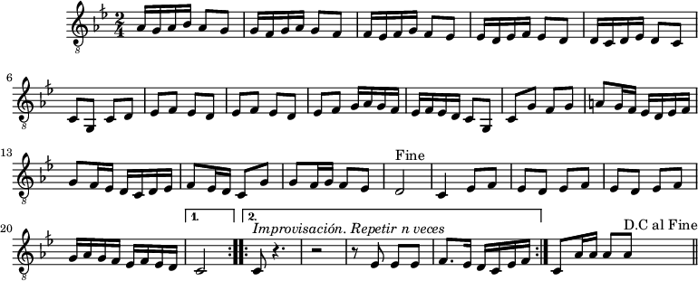
Bint Al Balad
Mohammad Abdel Wahab — Bayati Re
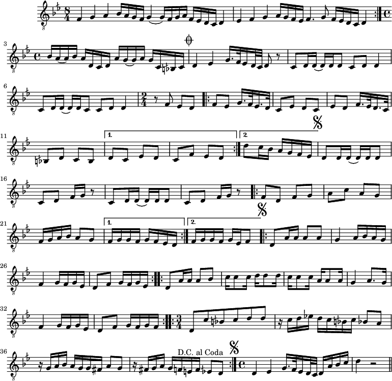
Zikrayati
Mohamed Al Qasabgi — Nahawand Sol
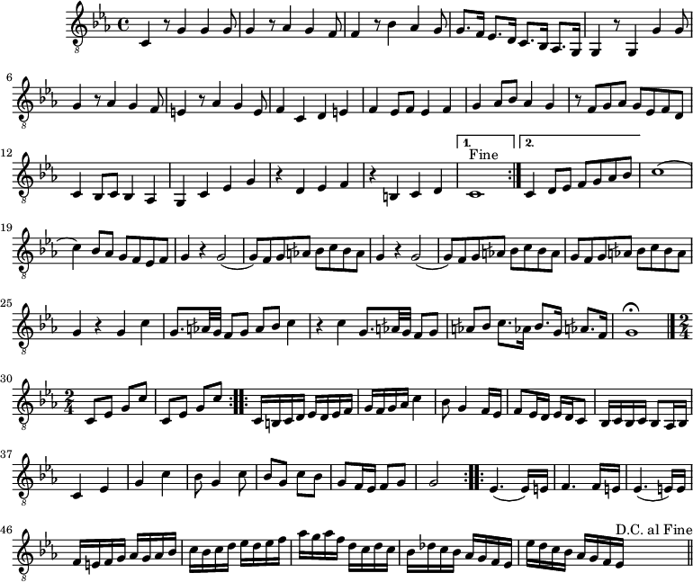
Samai Bayati
Ibrahim al-Ayran — Bayati Re
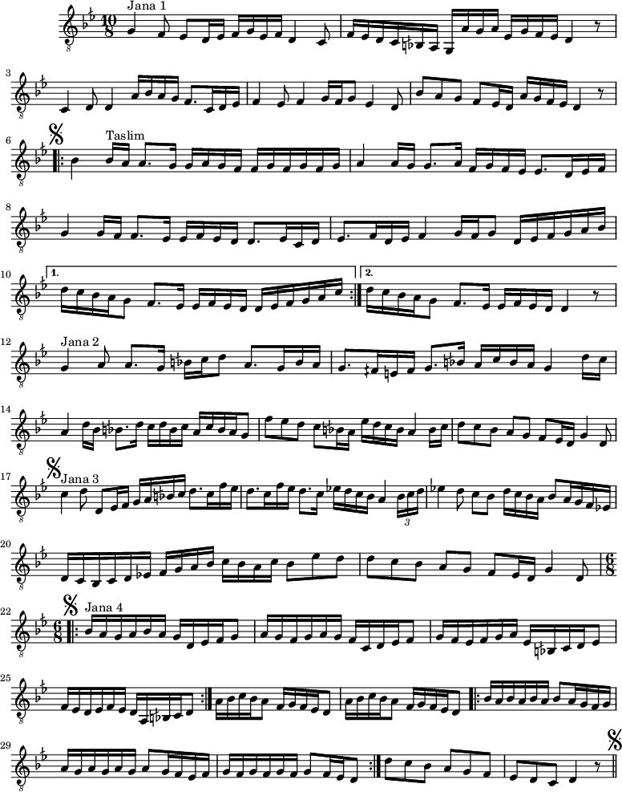
Longa Farahfaza
Riad Al Sunbati — Nahawand Sol
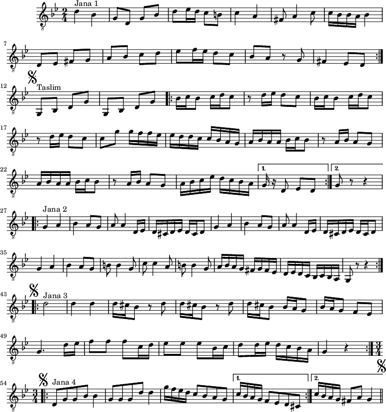
Longa Fantasia Nahawand
Mohammad Abdel Wahab — Nahawand Do
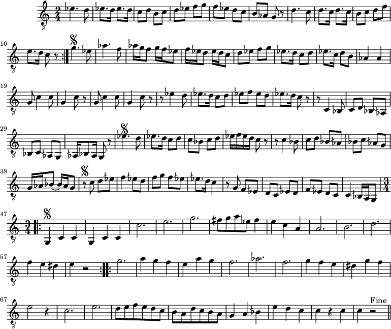